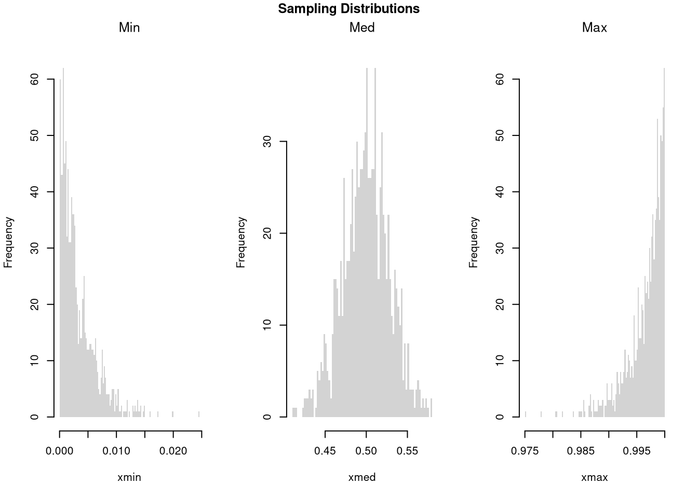

6 (Re)Sampling
6.1 Sample Distributions
The sampling distribution of a statistic shows us how much a statistic varies from sample to sample.
For example, see how the mean varies from sample to sample to sample.
Code

Examine the sampling distribution of the mean
Code

In this figure, you see two the most profound results known in statistics
- Law of Large Numbers: the sample mean is centered around the true mean.
- Central Limit Theorem: the sampling distribution of the mean is approximately standard normal.
Central Limit Theorem.
There are actually many different variants of the central limit theorem, as it applies more generally: the sampling distribution of many statistics are standard normal. For example, examine the sampling distribution of the standard deviation.
Code

It is beyond this class to prove this result, but you should know that not all sampling distributions are standard normal. For example, examine the sampling distribution of the three main “order statistics”
Code
# Create 300 samples, each with 1000 random uniform variables
x <- sapply(1:300, function(i) runif(1000) )
# Each row is a new sample
length(x[1,])
## [1] 300
# Median looks normal, Maximum and Minumum do not!
xmin <- apply(x,1,quantile, probs=0)
xmed <- apply(x,1,quantile, probs=.5)
xmax <- apply(x,1,quantile, probs=1)
par(mfrow=c(1,3))
hist(xmin, breaks=100, border=NA, main='Min', font.main=1)
hist(xmed, breaks=100, border=NA, main='Med', font.main=1)
hist(xmax, breaks=100, border=NA, main='Max', font.main=1)
title('Sampling Distributions', outer=T, line=-1)
6.2 Intervals
Using either the bootstrap or jackknife distribution, we can calculate
- confidence interval: range your statistic varies across different samples.
- standard error: variance of your statistic across different samples.
Note that in some cases, you can estimate the standard error to get a confidence interval.
Code
Confidence Interval.
Compute the upper and lower quantiles of the sampling distribution.
Sample Mean. We simulate the sampling distribution of the sample mean and construct a 90% confidence interval by taking the 5th and 95th percentiles of the simulated means. This gives an empirical estimate of the interval within which the true mean is expected to lie with 90% confidence, assuming repeated sampling.
Code
# Middle 90%
mq <- quantile(sample_means, probs=c(.05,.95))
paste0('we are 90% confident that the mean is between ',
round(mq[1],2), ' and ', round(mq[2],2) )
## [1] "we are 90% confident that the mean is between 0.47 and 0.53"
bks <- seq(.4,.6,by=.001)
hist(sample_means, breaks=bks, border=NA,
col=rgb(0,0,0,.25), font.main=1,
main='Confidence Interval for the mean')
abline(v=mq)
Sample Percentile. We repeat the process to estimate the 99th percentile for each sample. We then construct a 95% confidence interval for the 99th percentile estimator, using the 2.5th and 97.5th quantiles of these estimates.
Code
## Upper Percentile
sample_quants <- apply(x,1,quantile, probs=.99)
# Middle 95% of estimates
mq <- quantile(sample_quants, probs=c(.025,.975))
paste0('we are 95% confident that the upper percentile is between ',
round(mq[1],2), ' and ', round(mq[2],2) )
## [1] "we are 95% confident that the upper percentile is between 0.97 and 1"
bks <- seq(.92,1,by=.001)
hist(sample_quants, breaks=bks, border=NA,
col=rgb(0,0,0,.25), font.main=1,
main='95% Confidence Interval for the 99% percentile')
abline(v=mq)Note that X% confidence intervals do not generally cover X% of the data. Those intervals are a type of prediction interval that is covered later. See also https://online.stat.psu.edu/stat200/lesson/4/4.4/4.4.2
Advanced Intervals.
In many cases, we want a X% interval to mean that X% of the intervals we generate will contain the true mean. E.g., in repeated sampling, 50% of constructed confidence intervals are expected to contain the true population mean.
Code
# Theoretically: [-1 sd, +1 sd] has 2/3 coverage
# Confidence Interval for each sample
xq <- apply(x,1, function(r){ #theoretical se's
mean(r) + c(-1,1)*sd(r)/sqrt(length(r))
})
# First 4 interval estimates
xq[,1:4]
## [,1] [,2] [,3] [,4]
## [1,] 0.4867591 0.4815874 0.4897469 0.4795437
## [2,] 0.5196231 0.5154757 0.5227362 0.5121627
# Explicit calculation
mu_true <- 0.5
# Logical vector: whether the true mean is in each CI
covered <- mu_true >= xq[1, ] & mu_true <= xq[2, ]
# Empirical coverage rate
coverage_rate <- mean(covered)
cat(sprintf("Estimated coverage probability: %.2f%%\n", 100 * coverage_rate))
## Estimated coverage probability: 68.60%Code
# Visualize first N confidence intervals
N <- 100
plot.new()
plot.window(xlim = range(xq), ylim = c(0, N))
for (i in 1:N) {
col_i <- if (covered[i]) rgb(0, 0, 0, 0.3) else rgb(1, 0, 0, 0.5)
segments(xq[1, i], i, xq[2, i], i, col = col_i, lwd = 2)
}
abline(v = mu_true, col = "blue", lwd = 2)
axis(1)
title("Visualizing CI Coverage (Red = Missed)")
This differs from a pointwise inclusion frequency interval
Code
# Frequency each point was in an interval
bks <- seq(0,1,by=.01)
xcovr <- sapply(bks, function(b){
bl <- b >= xq[1,]
bu <- b <= xq[2,]
mean( bl & bu )
})
# 50\% Coverage
c_ul <- range(bks[xcovr>=.5])
c_ul # 50% confidence interval
## [1] 0.49 0.51
plot.new()
plot.window(xlim=c(0,1), ylim=c(0,1))
polygon( c(bks, rev(bks)), c(xcovr, xcovr*0), col=grey(.5,.5), border=NA)
mtext('Frequency each value was in an interval',2, line=2.5)
axis(1)
axis(2)
abline(h=.5, lwd=2)
segments(c_ul,0,c_ul,.5, lty=2)
6.3 Resampling
Often, we only have one sample. How then can we estimate the sampling distribution of a statistic?
We can “resample” our data. Hesterberg (2015) provides a nice illustration of the idea. The two most basic versions are the jackknife and the bootstrap, which are discussed below.

Jackknife Distribution.
Here, we compute all “leave-one-out” estimates. Specifically, for a dataset with \(n\) observations, the jackknife uses \(n-1\) observations other than \(i\) for each unique subsample. Taking the mean, for example, we haveCode

Bootstrap Distribution.
Here, we draw \(n\) observations with replacement from the original data to create a bootstrap sample and calculate a statistic. Each bootstrap sample \(b=1...B\) uses a random set of observations (denoted \(N_{b}\)) to compute a statistic. We repeat that many times, say \(B=9999\), to estimate the sampling distribution. Consider the sample mean as an example;Code

Caveat. Note that we do not use the mean of the bootstrap or jackknife statistics as a replacement for the original estimate. This is because the bootstrap and jackknife distributions are centered at the observed statistic, not the population parameter. (The bootstrapped mean is centered at the sample mean, not the population mean.) This means that we cannot use the bootstrap to improve on \(\overline{x}\); no matter how many bootstrap samples we take. We can, however, use the jackknife and bootstrap to estimate sampling variability.
Intervals.
Note that both methods provide imperfect estimates, and can give different numbers. Percentiles of jackknife resamples are systematically less variable than they should be. Until you know more, a conservative approach is to take the larger estimate.
Code
Also note that the standard deviation refers to variance within a single sample, and is hence different from the standard error. Nonetheless, they can both be used to estimate the variability of a statistic.
Value of More Data.
Each additional data point you have provides more information, which ultimately decreases the standard error of your estimates. However, it does so at a decreasing rate (known in economics as diminishing returns).
Code
Nseq <- seq(1,100, by=1) # Sample sizes
B <- 1000 # Number of draws per sample
SE <- sapply(Nseq, function(n){
sample_statistics <- sapply(1:B, function(b){
x <- rnorm(n) # Sample of size N
quantile(x,probs=.4) # Statistic
})
sd(sample_statistics)
})
par(mfrow=c(1,2))
plot(Nseq, SE, pch=16, col=grey(0,.5),
main='Absolute Gain', font.main=1,
ylab='standard error', xlab='sample size')
plot(Nseq[-1], abs(diff(SE)), pch=16, col=grey(0,.5),
main='Marginal Gain', font.main=1,
ylab='decrease in standard error', xlab='sample size')